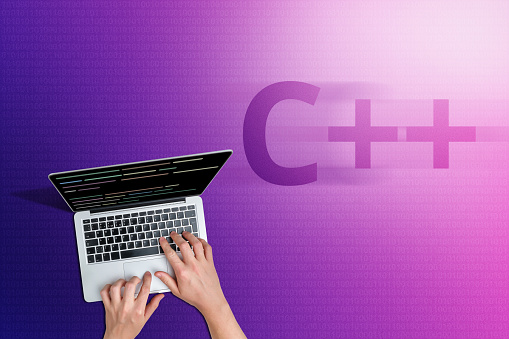

Blog by Dinesh
About Python

What is Python? Executive Summary
Python is an interpreted, object-oriented,
high-level programming language with dynamic semantics. Its high-level built in data structures,
combined with dynamic typing and dynamic binding, make it very attractive for Rapid Application
Development,
as well as for use as a scripting or glue language to connect existing components together.
...Python's simple,
easy to learn syntax emphasizes readability and therefore reduces the cost of program
maintenance.
Python supports modules and packages, which encourages program modularity and code reuse. The
Python interpreter and the extensive
standard library are available in source or binary form without charge for all major platforms,
and can be freely distributed.
Often, programmers fall in love with Python because of
the increased productivity it provides. Since there is no compilation step, the edit-test-debug
cycle is incredibly fast. Debugging Python programs is easy: a bug or bad input will never cause
a segmentation fault. Instead, when the interpreter discovers an error, it raises an exception.
When the program doesn't catch the exception, the interpreter prints a stack trace. A source
level debugger allows inspection of local and global variables, evaluation of arbitrary
expressions, setting breakpoints, stepping through the code a line at a time, and so on. The
debugger is written in Python itself, testifying to Python's introspective power. On the other
hand, often the quickest way to debug a program is to add a few print statements to the source:
the fast edit-test-debug cycle makes this simple approach very effective.
Applications
The Python Package Index (PyPI) hosts thousands of third-party modules for
Python. Both Python's standard library and the community-contributed modules allow for endless
possibilities.
Web
and Internet Development
If you want to
learn more click here
About Java

What Is Java?
Java is a computer programming language. It enables programmers to write computer instructions using
English-based commands instead of having to write in numeric codes. Its known as a high-level
language because it can be read and written easily by humans.
Like English, Java has a set of rules that determine how the instructions are written. These rules
are known as its syntax. Once a program has been written, the high-level instructions are translated
into numeric codes that computers can understand and execute.
...Ease of Use: The fundamentals of Java came from a
programming language called C++. Although C++ is a powerful language, it is complex in its
syntax and inadequate for some of Java's requirements. Java built on and improved the ideas of
C++ to provide a programming language that was powerful and simple to use.
Reliability: Java needed to reduce the likelihood of fatal errors from programmer mistakes. With
this in mind, object-oriented programming was introduced. When data and its manipulation were
packaged together in one place, Java was robust.
Security: Because Java was originally targeting mobile devices that would be exchanging data
over networks, it was built to include a high level of security. Java is probably the most
secure programming language to date.
Platform Independence: Programs need to work regardless of the machines they're being executed
on. Java was written to be a portable and cross-platform language that doesn't care about the
operating system, hardware, or devices that it's running on.
The team at Sun Microsystems was successful in combining these key principles, and Java's
popularity can be traced to it being a robust, secure, easy to use, and portable programming
language.
About C++
What is C++?
C++ is a cross-platform language that can be used to create
high-performance applications.
C++ was developed by Bjarne Stroustrup, as an extension to the C language.
C++ gives programmers a high level of control over system resources and memory.
The language was updated 4 major times in 2011, 2014, 2017, and 2020 to C++11, C++14, C++17,
C++20. ...
Why Use C++
C++ is one of
the world's most popular programming languages.
C++ can be found in today's operating systems, Graphical User Interfaces, and embedded systems.
C++ is an object-oriented programming language which gives a clear structure to programs and allows
code to be reused, lowering development costs.
C++ is portable and can be used to develop applications that can be adapted to multiple platforms.
C++ is fun and easy to learn!
As C++ is close to C# and Java, it makes it easy for programmers to switch to C++ or vice versa.
About PHP

What is a PHP File?
PHP code is executed on the server, and the result is returned to the browser as plain HTML
PHP files have extension ".php"
PHP files can
contain text, HTML, CSS, JavaScript, and PHP code
...
PHP can generate
dynamic page content
PHP can create, open, read, write, delete, and close files on the server
PHP can collect form data
PHP can send and receive cookies
PHP can add, delete, modify data in your database
PHP can be used to control user-access
PHP can encrypt data
With PHP you are not limited to output HTML. You can output images, PDF files, and
even Flash
movies. You can also output any text, such as XHTML and XML.
Lear From here